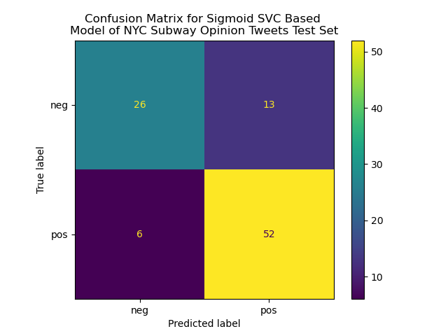
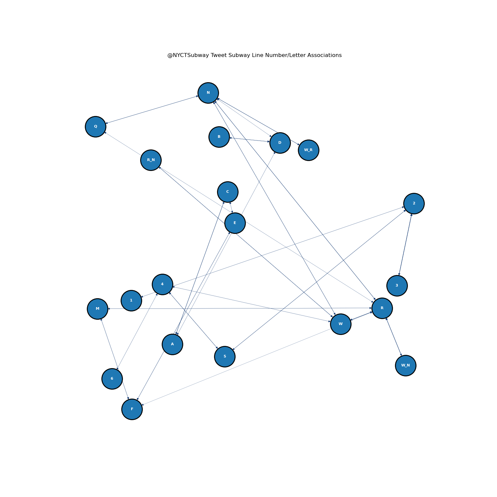

|
Image to the right from: https://towardsdatascience.com/machine-learning-algorithms-in-laymans-terms-part-1-d0368d769a7b. Through this project, a wide variety of questions were addressed using a wide variety of machine learning methods, such as Naive Bayes, Support Vector Machines, Decision Trees, and more. Numerous novel conclusions have been reached, along with confirmations of intuitively expected results. Many of the goals outlined in the research questions in the introduction were met, and many others remain unanswered, subject to future research. Models were built to classify tweet sentiments regarding opinions about the MTA and its transit system, as well as identifying agencies based upon relevant measures of transit performance. Here I will provide a brief summary of the findings of this project. DataA wide variety of data were gathered, cleaned, explored, analyzed, and applied to models. For text data, thousands of tweets gathered in September-October were gathered and Naive Bayes, Support Vector Machines, and Association Rule Mining were applied to them. Numerous different types of record data were also analyzed, with a specific focus on transit performance metrics, as well as weather data. |
 |
Classification
|
Multiple different methods of supervised classification were applied to both tweets about the MTA, and various performance metrics. The technical descriptions of the means and methods behind these may be found in the Naive Bayes, SVM, and Decision Trees sections, only the conclusions generated from these analyses will be described here. Through SVM and Naive Bayes applied to text data, models that accurately assessed the sentiment of tweets about the MTA and its transit system were created. This can enable decisionmakers to quantify how positive or negative opinions about their system are, and can adjust their policies accordingly. This can enable them to find the most important/pressing opinions and feedback, while filtering out the more neutral noise that may not be what the MTA is looking to analyze. Through Naive Bayes and Decision Trees applied to record data, models that assessed transit performance metrics relative to agency type were created. These models can enable transit decisionmakers to quantify the differences in performance between agencies, which could enable more efficient decisionmaking and inspire future analyses that the MTA could undertake. |
 |
Clustering
|
Through clustering, the associations between weather and transit performance metrics of the NYC Subway were analyzed. Although this analysis did not provide any significant new insights into the potential connection between weather and NYC subway service reliability, it is still interesting and useful to apply these methods to these data to see if any relationships/correlations did, in fact, exist. As enunciated in the Clustering section of this project, further analyses should be undertaken to assess other new insights into the data, potentially incorporating other measures of NYC Subway performance and/or weather phenomena, or explore other natural barriers/effects that may affect the NYC Subway system. This could include examining on time performance (when data for that becomes available), how often trains need to be taken out of service, as well as weather phenomena such as humidity, snowfall, and wind, among others. There are countless possibilities that could further explore this potential connection between subway performance/reliability and natural phenomena. In short, more analysis needs to be done before establishing a connection between subway reliability and nature. |
 |
ARM
|
The information gathered through the Association Rule Mining analysis can aid decisionmakers within the MTA to better address and alleviate delays and the adverse consequences of service changes. The MTA has limited resources to deal with delays, so it is necessary that their decisionmakers understand how the system is interconnected and how their decisions impact the system as a whole. Quantifying the strength of the associations between different lines, as performed in the prior section, can enable the MTA to understand which relationships between lines are most important, and thus they can dedicate their resources accordingly. Whilem on the surface, many of these associations may seem trivial or obvious based on the map/construction of the NYC Subway system, it was still valuable to quantify and map these associations to potentially uncover new relationships that were previously hidden. |
 |
Final Words